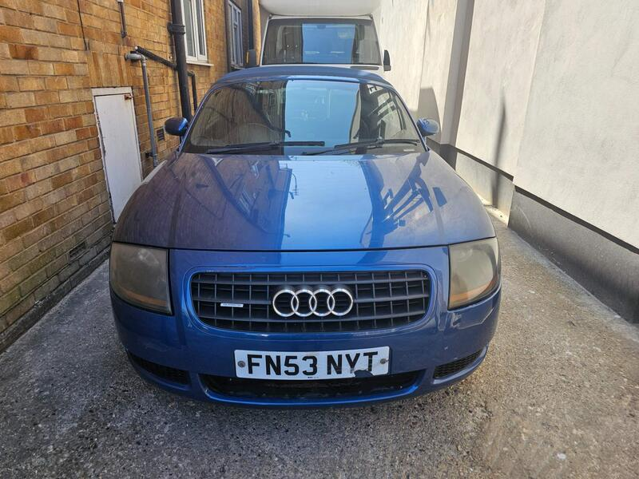
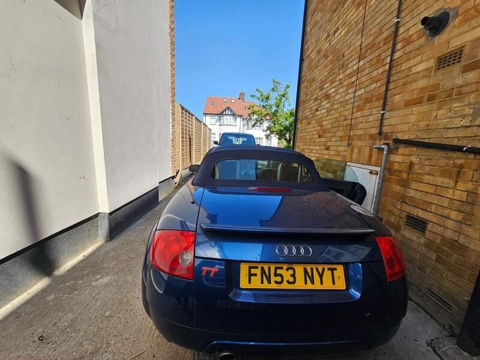
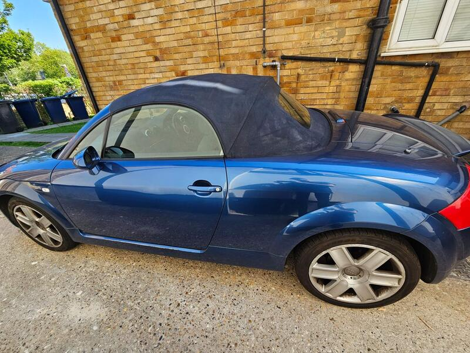
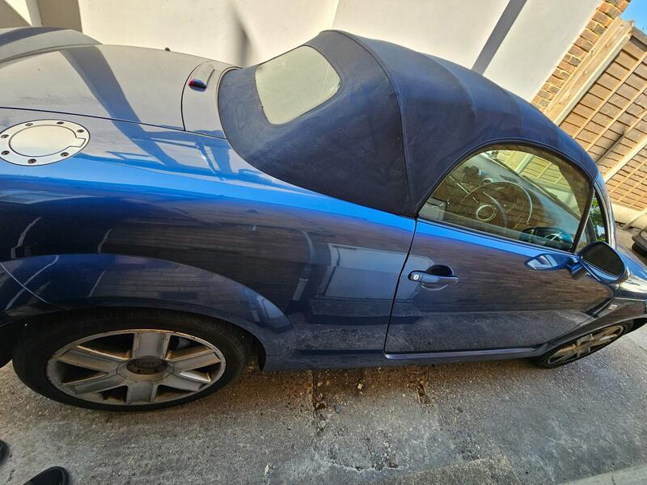

Seller photos from the AutoTrader ad.
Audi TT Roadster 1.8T
A cheap, documented Mk1 roadster. Belt history is the deal-breaker.
Key facts
| Price | £1,499 |
|---|---|
| Year | 2003 |
| Miles | 96,457 |
| Model | Audi TT Roadster 1.8T |
| Colour | Blue |
| Registration | 2003 (53 reg) |
| Owners | 10 owners |
| Service history | Full |
| MOT | Not stated |
| Seller | Private |
| Location | Hendon |
| From GU7 | 33 mi (AutoTrader) |
| Checked | 13 Oct 2026 |
Why buy it
- Cheapest TT here at £1,499 with full service history
- Roof fully working (ad)
Things to check
Mk1: ask for proof of the timing belt and water pump
The dash pod fails commonly; blocked roof drains soak the carpets
- Audi TT Roadster (8N/8J) weak spots
Mostly OK, but Mk2 rear steel section and the metalwork around the hood can corrode; blocked hood drains soak carpets. Mk1: timing belt/water pump, coilpacks, failing dash pod (~£200). Mk2 2.0 TFSI: cam follower (2006-08), oil use and chain tensioner (2009-11); Haldex service on quattros.
Seller says (extract)
“Audi TT Convertible - Only 96k Miles FOR SALE: 2003 Audi TT Convertible - Manual | 96,457 Miles Get ready for summer with this sleek Audi TT Roadster - a clean, well-kept convertible that's fun to drive and great value for money. Year: 2003 Mileage: 96,457 miles Transmission: Manual Roof: Fully working convertible top Condition: Extremely clean and smooth - well looked after Drive: Solid and reliable - no warning lights, runs beautifully This TT is perfect for someone looking for a stylish, affordable convertible with that classic Audi feel. Whether it's your first car or a fun weekend cruiser, this one ticks all the boxes.…”